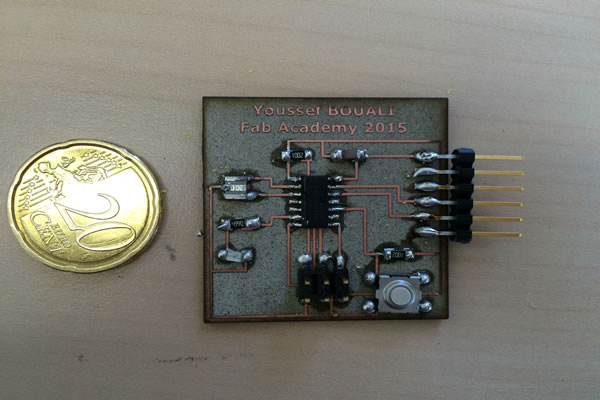
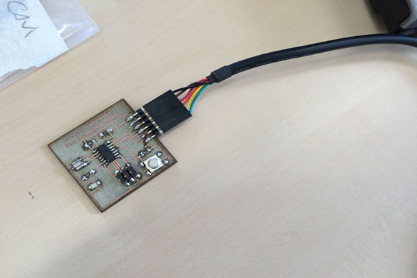

During this week we've learned about Electronics Design.
The assignment of this week module is to redesign and redraw the hello-echo board from scratch, and to add to it a LED and a button. In order to achieve our goals, and as suggested by Neil, I learned some software to design PCBs. After various trials and It was expected, I felt very comfortable with Eagle where it is possible to design PCBs from two different editors that represent respectively two point of view of the PCB: schematic and board.
The schematic editor allow to add various components types and then define all the connections between them. This phase allow to determine the electrical and electronic parts of the PCB. It is very important to check components' specifications in their data sheet and how they can be connected. Next, we move to board editor in order to place all the components along with their connections inside the board. In this we phase, we are able to design the board and more importantly the traces and paths for final production.
I started with Eagle software, where I added all the necessary libraries that I have previously downloaded from the FabAcademy website:
Next after adding libraries, I moved to add to the schema components needed for the hello-echo board. I added the following components:
-> 6-pin programming header to program the board
-> Attiny44A microcontroller
-> FTDI header for power supply and computer connection
-> 20 MHz Resonator external crystal clock generator, Attiny44A can work also @20Mhz
-> Capacitor for a better quality input current
-> 10K Resistors
-> Led for the excerise
-> Resistor to reduce led applied voltage
After that, I connected all the components to the right slots as specified in datasheets. I got the following schematic board:
Step 3: Traces design in the Board Editor
After finalizing the schematic work and all logical connections between all components, I moved to the board editor, where at the beginning it showed a mess of components connected by yellow lines. These yellow lines show the connections we have defined and which I had to follow in order to place components inside the board and design traces for final print.
I made many trials in order to place the traces, including the “AUTOROUTE” function, but I made many mistakes and got and error board:
After that, slowly I made single traces and avoiding intersections between them. Finally I made it, and this is the result:
Step 4: Prepare board for printingI exported my Eagle board into a png image format with settings of monochrome and 500DPI of resolution. At this step, I detected an error that would made circuit error on my board:
Therefore I had to go back to Eagle and make the necessary changes in order to solve this problem, then export again the png file and customize it. Here is the final result:
Step 5: Board Printing
To print the board we used the same process that was experimented during Electronics Production module: engraving PCB using the laser cutter. Here is my boar finished result:
Step 6: Soldering Electronic Components
After I soldered all the electronic components to their corresponding slots, this is what I got:

After that I made the smoke test by connecting the board to the USB port. Everything is OK (after intermediate failures)

The Eagle project and board PNG files are available for downloand here: